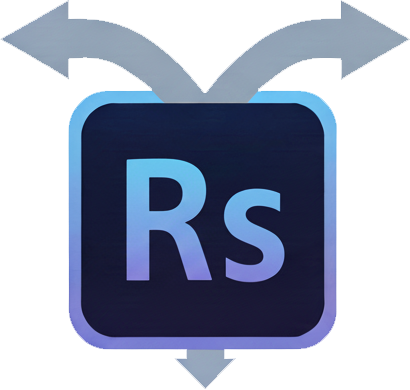

RouterShop
Generate
Settings
Selection Tools
Create Selection
Scale Selection
0%
Contract
Expand
Inpainting (Image-to-Image)
Context
✨
Generate Inpainting
Text-to-Image Generation
Output Size
Context
✨
Generate & Add Layer
API Configuration
OpenRouter API Key
Check API Status
Status:
-
Limit:
-
Usage:
-
Remaining:
-
Model Settings
Text Model
Vision Model
Image Generation Model
Prompt Optimizer
System Prompt for Optimization
Settings Backup
Export Settings
Import Settings